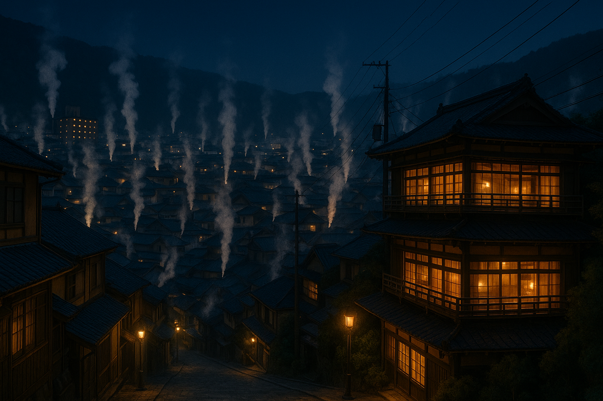
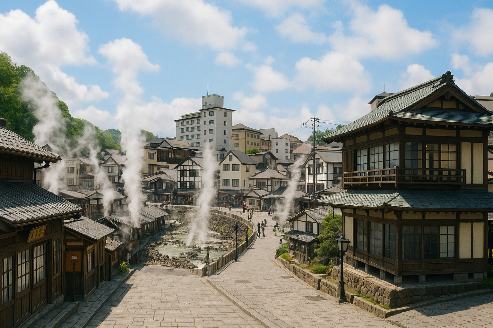
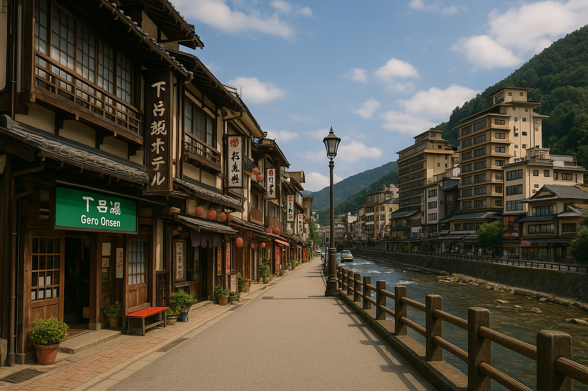

別府温泉
大分県別府市にある、日本最大級の温泉地です。源泉数や湧出量は日本一を誇り、「別府八湯」と呼ばれる8つの温泉エリアがあります。泉質の種類がとても豊富で、さまざまな効能が期待できます。「地獄めぐり」では、色とりどりの温泉池や噴気、泥湯などが楽しめ、観光スポットとしても人気です。別府市内には多くの旅館や共同浴場が点在しており、手軽に温泉めぐりができます。
草津温泉
群馬県吾妻郡草津町に位置し、「日本三名泉」のひとつとして知られています。毎分およそ3万リットルもの自然湧出量を誇り、強い酸性泉が特徴です。殺菌作用が高く、古くから湯治場として親しまれてきました。温泉街の中心にはシンボルともいえる「湯畑」があり、湯けむりに包まれる風景が観光客を惹きつけます。伝統的な「湯もみ」の実演も見ることができ、情緒豊かな温泉地です。
下呂温泉
岐阜県下呂市にある、飛騨川沿いに広がる温泉地で、「日本三名泉」に数えられています。歴史は古く、平安時代の記録にも登場します。泉質はアルカリ性単純温泉で、なめらかでやわらかい湯ざわりが特徴です。美肌効果が期待できることから、多くの人に親しまれています。温泉街には旅館や足湯、共同浴場が立ち並び、レトロな町並みや飛騨の自然とともに癒しの時間を過ごせます。
